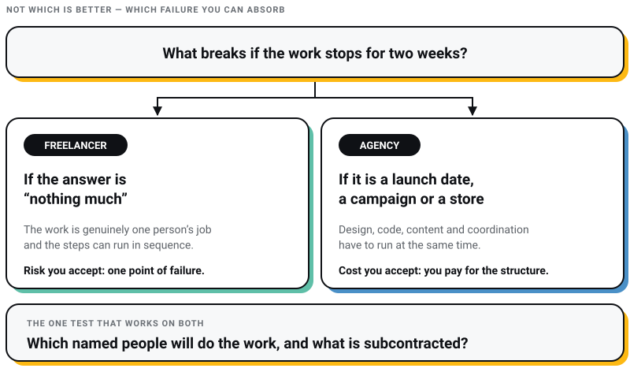
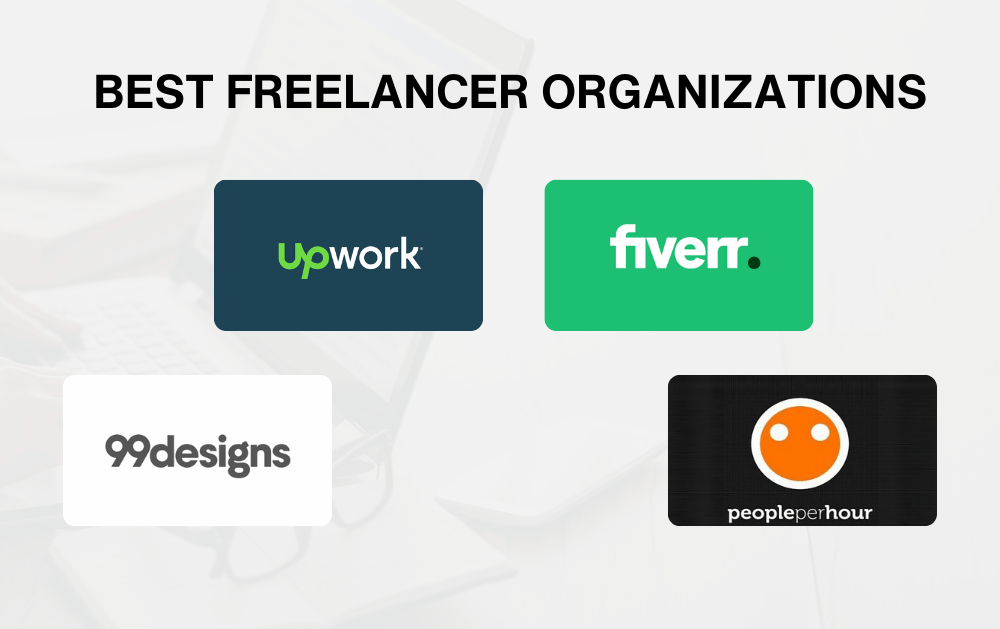

WEB DEVELOPMENT
WEB DEVELOPMENT
AI Website Builders vs Custom Development: Where the Shiny Tools Actually Break
AI website builders are fast, but are they right for your business? Discover where they excel, where they fail, and when custom development is the…

I run an agency, and I am going to spend most of this page arguing that a lot of you should hire a freelancer instead.
That is not modesty. I have already published the version of this argument one rung down: if all you need is a simple site that says who you are and how to reach you, use an AI builder, you do not need us, and I meant it. This is the same honesty applied one rung up. A single well-chosen freelancer beats a distracted agency on most small projects, and several of the standard reasons for hiring an agency were invented by agencies.
The framing everyone uses for this decision is wrong. It is not which is better, and it is not a budget tier. It is which failure you can absorb.
Hire a freelancer when the work is genuinely one person's job and you could survive that person going quiet for two weeks. Hire an agency when design, development, content and coordination have to run at the same time rather than in sequence, or when the site is load-bearing enough that a pause costs you more than the markup. Everything below is the detail behind those two sentences.
One test cuts through most of it. Ask both of them which named people will do the work and what is subcontracted. An agency that subcontracts everything is a freelancer arrangement with a markup, and you are entitled to know that before you sign rather than after.

The usual version of this comparison sets a freelancer's hourly rate against an agency's and calls that the decision. It assumes the thing you are buying is production hours. In 2026 it is not, and I say that as someone whose studio sells them.
My position on my own industry, published elsewhere and repeated here without softening: agencies that bill for production hours are finished. The tools erased that value. What is left worth paying for is thought, judgement and the systems around the work, and that is as true of a freelancer as it is of us.
The first real measurement of this came from Upwork's own data. Xiang Hui, Oren Reshef and Luofeng Zhou tracked freelancers on the platform through the release of ChatGPT, DALL-E 2 and Midjourney, and published the result in Organization Science in November 2024 (The Short-Term Effects of Generative Artificial Intelligence on Employment). Freelancers in the most affected occupations lost both work and earnings. The finding that should worry you more, if you were planning to solve this by hiring a better freelancer, is that being good did not protect anyone. The authors report no evidence that strong past performance moderated the effect, and suggestive evidence that top freelancers were hit disproportionately.
The platforms are not pretending otherwise. In September 2025 Fiverr cut 250 people, about 30% of its own staff. Micha Kaufman, its chief executive, said the goal was an AI-first company that is leaner and faster with a smaller team. The marketplace that built its brand on cheap human production hours no longer believes in cheap human production hours.
I want to be careful about how far that goes. It does not mean freelancers are finished, and I have not seen anything that says agencies survive it better. It means the floor moved. Anyone selling execution alone, one person or forty, is competing with software that does execution for the price of a subscription. If you are choosing between a freelancer and an agency on the basis of who charges less per hour, you are still valuing the thing that stopped being scarce. The longer version of that argument is in AI website builders versus custom development.
The question is not how big the project is. It is how much of it has to happen at the same time. A twelve-page site where content, design and build run in sequence is one person's job however many pages it has. A store that needs a payment integration, a content plan and a design system settled in the same fortnight is not, because one person can only be in one of those conversations.
Freelancers usually quote less and often are less, but not for the reason people assume. It is not that agencies are greedy. It is that an agency's price includes cover, a second person who can open your project when the first one cannot, and you pay for that in the months you do not need it as well as the month you do. Whether that is worth it depends entirely on what a two-week pause costs you.
The other half of the cost question is Indian tax law, and almost nobody raises it. See below.
For one deep and unusual skill, a freelancer is often better, because specialists rarely stay inside agencies. For four ordinary skills that have to agree with each other, an agency is better, because someone has to make them agree. Depth and breadth are different purchases and the mistake is buying one while describing the other.
With a freelancer you talk to the person doing the work, which is faster and better until that person is asleep, ill or on another job. With an agency you usually talk to a project manager, which is slower and adds a translation layer, and buys you someone whose actual job is to notice that nobody has answered you for four days.
Freelancers are genuinely more flexible on hours and on small changes. Agencies are more flexible on scope, because there is somebody else to put on it. Decide which kind of flexibility your project will actually need, since they are not the same thing and nobody sells both.
Location stopped being about proximity years ago and is now about two practical things: whether you can get an invoice you can claim tax against, and whether disputes land in a jurisdiction you can act in. A studio in your own city is easier to sue and easier to sit across a table from. That is a real advantage and it is smaller than the pitch decks suggest.
An agency does not produce better work because it has more people. It produces more consistent work, because bad work has to get past somebody else first. That is a real difference and it is the one worth paying for, but it is consistency you are buying, not brilliance. The best individual work I have seen usually came from an individual.
The freelancer's advantage is that everything you pay reaches the work, and the person deciding is the person doing. The freelancer's risk is a single point of failure. Illness, a better offer, or a bigger client, and your project pauses. Survivable on a brochure site. Expensive on a store taking orders.
A freelancer is not carrying an office, a bench, or a sales team. On a small project that difference is most of the gap between the two quotes.
You explain the thing once, to the person who will build it, and there is nobody to consult before an answer comes back. On projects that turn on taste rather than coordination, this is worth more than any process.
If you need something genuinely unusual, the person who has done it forty times is more likely to be independent than employed. You can also hire two freelancers for two skills, as long as you accept that you have just made yourself the project manager.
One person can only be in one conversation. If your project needs design, code, content and testing to progress in the same week, you will either wait or start hiring more freelancers, and at that point you are running an agency without the margin.
Ask what happens to your project if the freelancer takes a full-time job in month three, and ask it before you engage rather than in month three. The answer should involve where the files live and who else could pick them up.
Not because freelancers are less honest. Because there is less to hold. An agency has a reputation and a registration to protect. Whatever recourse you want, put it in writing on day one, and be aware that a written scope is the recourse.
What an agency sells is cover and parallelism. What you accept in exchange is that you pay for the structure even in the months you do not use it, and that the person assigned to you may not be the one who impressed you in the pitch.
More than one person can open the project and answer the phone. This is the whole product. Everything else on this list is a consequence of it.
Design, front end, back end and content can move at once instead of queueing behind one person, which is why agency timelines compress on complex projects and look absurd on simple ones.
Work passes a second pair of eyes before it reaches you, and there is a person above the person you are unhappy with. Both matter more after launch than during the build.
The overhead is real and it is in your quote. You will be told that agencies work out cheaper because they are more efficient. That is a sales line, and it contradicts the thing everybody in the same conversation also says, which is that agencies cost more. Both cannot be true.
Ask who specifically will do the work, whether they are staff, and what is subcontracted. There is nothing wrong with subcontracting. There is something wrong with not disclosing it, because it changes who is accountable and how fast a fix arrives. The formal version of this arrangement has a name, and I have written about what an agency is really buying when it white-labels a build.
The change request that a freelancer makes in ten minutes goes through a queue. That queue is also why nothing gets changed on a Friday evening by someone who has not read the brief.
If your business is GST-registered and you are hiring in India, the sticker prices are not comparable and most freelancer-versus-agency posts never mention it.
Web design and development is taxed at 18%. A registered studio charging you 18% is charging you something you can claim as input tax credit. An unregistered freelancer charging you nothing cannot issue you an invoice you can claim against, so their lower number can be the more expensive one in net terms. Registration becomes mandatory for a service provider above the turnover threshold, which is why the freelancers who have crossed it will quote you GST too and the ones who have not, will not.
This is a conversation for your accountant rather than for me, and it is often the largest single variable in the comparison. The notification, the SAC codes and the arithmetic are set out in what web design actually costs in Kolkata.

The marketplaces are real and useful, and what they give you is a filter and an escrow rather than a judgement. Upwork is the broadest and is where the research above was conducted. Fiverr is packaged and fast. PeoplePerHour sits between them.
Most write-ups of these platforms repeat the marketing back at you, including the line that Fiverr is cheap because most services start at $5. I have been through the terms and the filings instead. The advertised number is almost never the number that leaves your account, and on the smallest jobs the gap is enormous.
| Platform | What the freelancer gives up | What you pay on top of the quote |
|---|---|---|
| Upwork | 0% to 15%, set per contract and fixed when the contract starts. Contracts formed before May 2025 are still on the old flat 10% | 5% on Basic or 10% on Business Plus, plus a contract initiation fee of $0.99 to $14.99 |
| Fiverr | 20% of the order, described on the seller's side as earning 80% | 5.5% plus $3.50 on any order under $200 |
| PeoplePerHour | 20% until lifetime billing to that one buyer passes £250, then 7.5%, then 3.5% above £5,000 | £0.60 plus 10% on most payment methods |
| Toptal | Not published | Not published |
Two of those need spelling out.
Fiverr's $5 floor is real, and it is a doorway rather than a price. Fiverr's own annual report on Form 20-F, filed with the SEC on 12 March 2026, says sellers price work from $5 to thousands of dollars. The same document reports annual spend per buyer of $342, and that 66% of marketplace revenue comes from buyers spending more than $500. Meanwhile the buyer fee turns a $5 gig into about $8.78 at checkout, which is a 75% markup on the headline. The number in the advertising and the number in the filing describe two different marketplaces, and the filing is the one written for people who can sue.
Upwork's fee is the figure I see quoted wrongly most often. The 20/10/5 sliding scale that half the internet still prints is not what Upwork charges, and was already gone before the flat 10% that replaced it. Flat 10% is now out of date too: Upwork's FY2025 annual report on Form 10-K says it maintains a flat 10% talent service fee only for contracts formed prior to May 2025. Everything since sits on the current variable rate, 0% to 15%, locked at the moment the contract is created. On your side it is 5% or 10% depending on plan, plus a per-contract initiation fee that most write-ups omit entirely.
Two smaller points while I am here. 99designs is not dead, which is the thing people now assume. It trades as 99designs by Vista and has done since Cimpress, the parent company of Vistaprint, announced the acquisition in October 2020. It still runs design contests, which produce volume rather than a considered answer. And Toptal, whose whole pitch is the top 3% of talent, publishes no rate card at all for either side, so there is nothing to compare.
Read a fee schedule as a statement of what the platform wants you to do. PeoplePerHour's rate falls as you keep working with the same buyer, so it is paying you to build a relationship. A flat percentage forever is paying you to keep churning through jobs. What none of them will tell you is the thing you actually need, which is whether this person will still be answering in month four. That you find out by asking, not by reading a profile.
Lists of the best web design agencies are, very often, published by web design agencies, with the publisher somewhere near the top of them. That is not a directory. It is an advertisement in a numbered format, and I am not going to run one here even though it would earn us the traffic.
Those lists go stale as well as being self-interested. If one of them recommends WebpageFX, that company has been called WebFX since August 2018, and eight years is a long time to recommend a business by a name it does not use.
The alternative is more useful anyway. A logo on a portfolio page can mean a five-year retainer or one afternoon of subcontracted work, and you cannot tell which from the outside. Ask instead: which named people will do this, what is subcontracted, who owns the code and the accounts on the day we part ways, and what happens after launch. Those questions work on a freelancer and an agency equally, and I have written all twelve of them out in the questions to ask before hiring a web design agency.
No, and in India not even reliably on paper. If you are GST-registered, an agency's 18% is credit rather than cost while an unregistered freelancer's lower quote is a final number. Run both through your accountant before you compare them.
You can, and it works, and you have taken the coordination job yourself. That is the agency's actual product. If you enjoy that work and have the hours, keep the margin. If you do not, you will pay for it either in fees or in evenings.
It made execution cheap for both sides, which should show up as lower prices from anyone honest. What it did not change is judgement, and that is now most of what you are buying. Ask either candidate what they would refuse to build for you and why. Nobody who only does production has an answer.
Three live sites you can measure yourself, the names of the people who will do the work, and a written scope. Everything else is preference.
Most of the businesses that ask us about this do not need to resolve freelancer against agency in the abstract. They need to answer one question honestly, which is what breaks if the work stops for two weeks. If the answer is nothing much, hire the best individual you can find and pay them properly. If the answer is a launch date, a campaign or a store taking orders, buy the cover.
At Pixel Street we are a web design agency in Salt Lake, Kolkata. We quote against written scope, and if what you describe is one person's job we will tell you that instead of selling you a team.
10 min read 12 cited sources WEB DEVELOPMENT
Author
Khurshid Alam is the founder of Pixel Street, an AI-native design & development studio. Design thinking on weekdays and spreadsheets on weekends.
He writes about growth, design, and AI, mostly because someone has to say the quiet parts out loud.
WEB DEVELOPMENT
AI website builders are fast, but are they right for your business? Discover where they excel, where they fail, and when custom development is the…
 Digital Marketing
Digital Marketing
Learn about AEO vs GEO vs SEO. Discover what changed with AI search, what still matters, and how to optimize for Google AI Overviews, ChatGPT, and…
 Digital Marketing
Digital Marketing
Want ChatGPT to recommend your brand? Learn how AI chooses businesses, where citations come from, and practical ways to increase your visibility.
 Web Design
Web Design
A client asked me this on a call last month: “Khurshid, everyone just asks ChatGPT now. Do we even need a website anymore?” He runs a business doing…